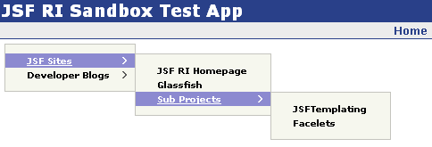

Renders a JavaScript menu with flyouts. For example:
will render a menu that looks like this:

If you find the default styling unappealing, the colors, borders, etc are all configurable via CSS. Documentation on how to do that is on the YUI site.